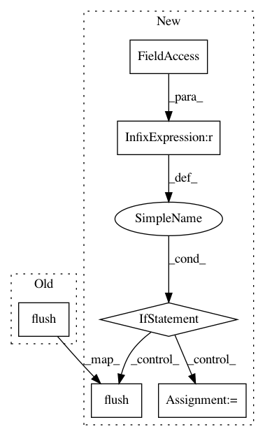

a2c7915dc8f072b7beed11b6cfad181746c0188b,pyprob/nn/inference_network.py,InferenceNetwork,optimize,#InferenceNetwork#Any#Any#Any#Any#Any#Any#Any#Any#Any#Any#Any#Any#Any#Any#Any#Any#Any#Any#Any#,322
Before Change
print_line = "{} | {} | {} | {} | {} | {} | {} | {} | {} ".format(total_training_seconds_str, epoch_str, total_train_traces_str, loss_initial_str, loss_min_str, loss_str, time_since_loss_min_str, learning_rate_current_str, traces_per_second_str)
max_print_line_len = max(len(print_line), max_print_line_len)
print(print_line.ljust(max_print_line_len), end="\r")
sys.stdout.flush()
if stop:
break
iteration += 1
// adjust global learning rate for iteration-based LR scheduler
After Change
print("\rSaving to disk... ", end="\r")
self._save(file_name)
if (time_batch - last_print > util._print_refresh_rate):
last_print = time_batch
total_training_seconds_str = util.days_hours_mins_secs_str(self._total_train_seconds)
epoch_str = "{:4}".format("{:,}".format(epoch))
total_train_traces_str = "{:9}".format("{:,}".format(self._total_train_traces))
traces_per_second_str = "{:,.1f}".format(int(batch.size * distributed_world_size / (time_batch - time_last_batch)))
print_line = "{} | {} | {} | {} | {} | {} | {} | {} | {} ".format(total_training_seconds_str, epoch_str, total_train_traces_str, loss_initial_str, loss_min_str, loss_str, time_since_loss_min_str, learning_rate_current_str, traces_per_second_str)
max_print_line_len = max(len(print_line), max_print_line_len)
print(print_line.ljust(max_print_line_len), end="\r")
sys.stdout.flush()
time_last_batch = time_batch
if num_traces is not None:
if trace >= num_traces:
stop = True
In pattern: SUPERPATTERN
Frequency: 4
Non-data size: 6
Instances
Project Name: pyprob/pyprob
Commit Name: a2c7915dc8f072b7beed11b6cfad181746c0188b
Time: 2019-02-25
Author: atilimgunes.baydin@gmail.com
File Name: pyprob/nn/inference_network.py
Class Name: InferenceNetwork
Method Name: optimize
Project Name: senarvi/theanolm
Commit Name: 6132a909409f3bb8217c43a00cbf6777115b3608
Time: 2016-11-22
Author: seppo.git@marjaniemi.com
File Name: theanolm/commands/train.py
Class Name:
Method Name: train
Project Name: Shmuma/ptan
Commit Name: 1e18489ec84dfa1d16303ac87d9f8c2299b5f4bb
Time: 2018-08-01
Author: max.lapan@gmail.com
File Name: ptan/common/utils.py
Class Name: RewardTracker
Method Name: reward
Project Name: GRAAL-Research/pytoune
Commit Name: dc8136f5821d4840fb99d4d75027107fdf1e11cd
Time: 2018-06-22
Author: fredy_14@live.fr
File Name: pytoune/framework/callbacks/progress.py
Class Name: ProgressionCallback
Method Name: on_batch_end